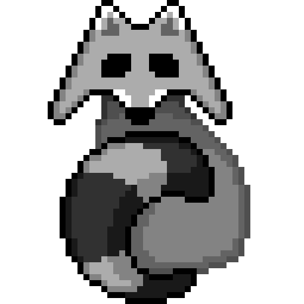
Monster Cleaner is a game developped in the contexct of the Unijam, a game jam that occured from November 12 to 14. The Unijam is organised every year as part of the JIN specialisation. It's a cooperation between 3 schools : Télécom SudParis, ENSIIE and Bobigny IUT.
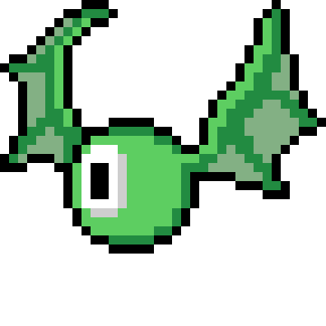
Monster Cleaner is a 2D side-on shooter game, where you play as a garbage collector tasked with
cleaning a monster nest in the sewers. After each wave of enemies, a new and more powerful weapon will spawn.
Grab it and enjoy its new special effects ! A friendly raccoon will recover the old weapon you discarded.
The twist ? The innoncent-looking creature will wait for you at the end and fight you with all the weapons you discarded !
Will you grab every new weapon and empower him, or only use you base weapon and make him defenceless ?
You can try it out on itch.io and visit the Unijam 2021 page.
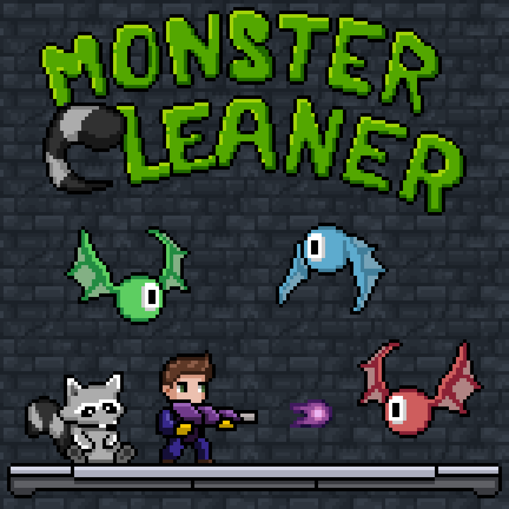
Our team consisted of 6 persons, and I was the graphist : I made every sprite used in the game by hand. I also helped deciding the direction of the gameplay in the early phased, and helped animating several sprites in Unity. We managed to balance a steady workflow and a healthy sleep schedule, and our efficient teamwork allowed us to win the third place out of 11 games developped.
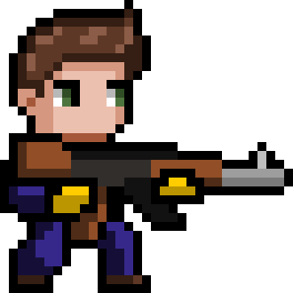 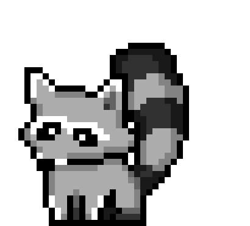
The various weapons at your disposal
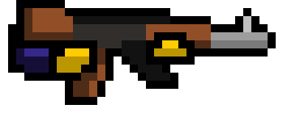 Assault rifle : your base weapon
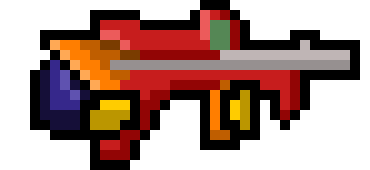 Laser sniper : shoots bullets that pass through platforms
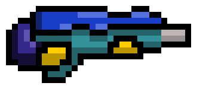 Bubble shooter : shoots bullets that bounces on walls and platforms
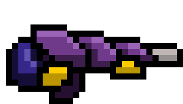 Energy cannon : shoots explosive bullets
The tilesets used
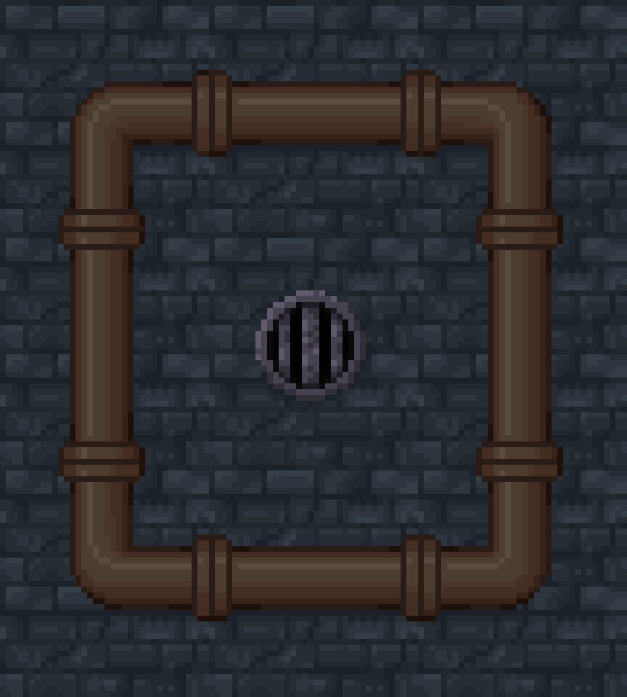 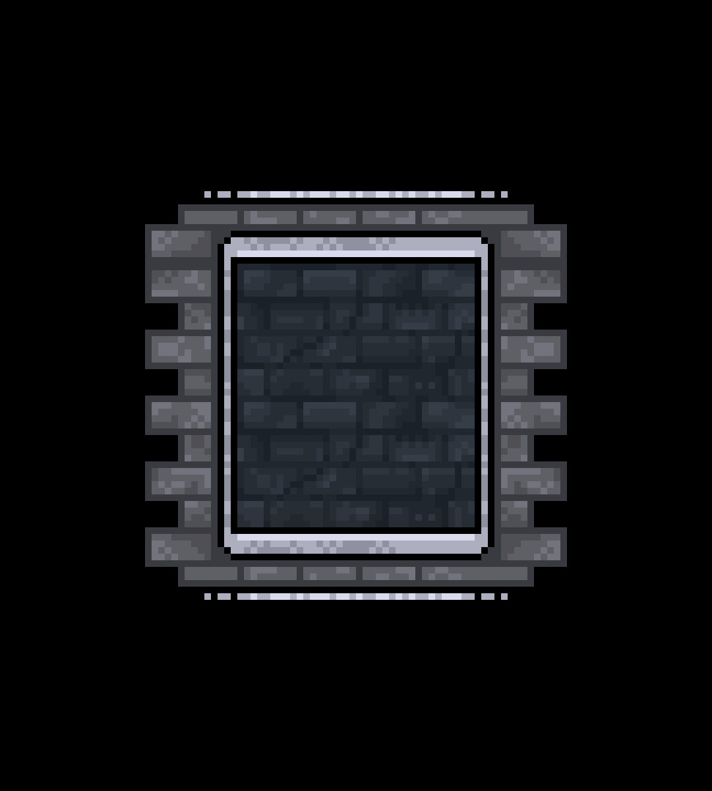